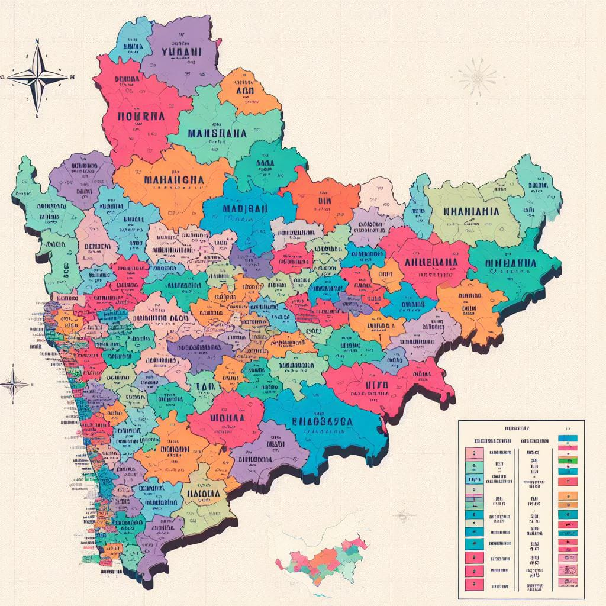

MAHARASHTRA

History
Maharashtra, situated at the crossroads of India's history, has witnessed the ebb and flow of ancient empires, medieval kingdoms, and transformative socio-political movements. From the Satavahanas' cultural legacy to the medieval glory of the Yadavas, the region has been a melting pot of diverse influences. The Maratha Empire, under the visionary leadership of Chhatrapati Shivaji Maharaj, marked a significant chapter, challenging Mughal hegemony and shaping the political landscape. In the post-independence era, Maharashtra emerged as an economic powerhouse, especially with Mumbai as its vibrant commercial and cultural center. Amidst this dynamic backdrop, the state is also characterized by its rich tribal heritage, encompassing communities like the Bhils, Gonds, and Warlis. The government's proactive efforts in tribal welfare encompass a multifaceted approach, addressing education, healthcare, and infrastructure, thereby fostering the sustainable development and preservation of the unique cultural identity of these tribes within the broader mosaic of Maharashtra's history.
List of Popular tribes in MAHARASHTRA
-
Warli Tribe
The Warli tribe, indigenous to Maharashtra, is renowned for their unique Warli art featuring intricate geometric patterns. With a deep connection to agrarian life, the Warlis have preserved their cultural heritage, adding vibrancy to Maharashtra's diverse tapestry. Bhil Tribe

The Bhil tribe, one of Maharashtra's largest tribal communities, predominantly inhabits the hilly and forested regions. Renowned for their rich cultural heritage, the Bhil tribe is characterized by unique rituals, vibrant folklore, and traditional craftsmanship, contributing to the diverse cultural tapestry of the state.Koli Tribe
The Koli tribe, primarily dwelling in Maharashtra's coastal areas, has a deep connection to maritime traditions and fishing communities. Known for their distinct cultural identity, the Kolis celebrate their heritage through traditional dances, music, and customs associated with coastal life.
Click Here For Detailed Information About Tribes Of MAHARASHTRA